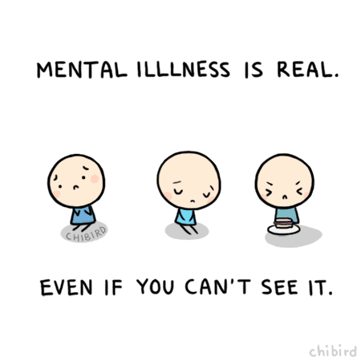

Mental Health while being incarcerated.

Why is mental health important?
Mental health includes our emotional, psychological, and social well-being. It affects how we think, feel, and act. It also helps determine how we handle stress, relate to others, and make healthy choices. Mental health is important at every stage of life, from childhood and adolescence through adulthood.

Suffer from depression
Women who are in incarcerated have some mental health issues about 10 percent of the incarcerated womens suffer from serious mental illnesses!